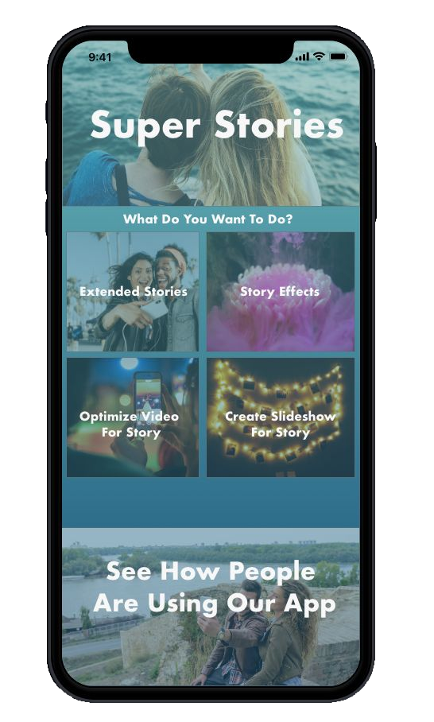

Front End Web Developer | UI/UX Designer
Super Stories (Under Construction)
A UI/UX Design Concept built using InVision and Adobe Xd for a mobile application that gives Instagram users advanced features for their stories
I noticed the frustration of people on their stories as they were cut off by the time limitations and other limitations of Instagram's story feature.
I set out to find out if there would even be a demand for this app as well as to find which features would be useful by surveying serveral aspiring Instagram influencers
Here are the responses to the survey questions.
Question 1
I wanted to know how users felt about the functionality of Instagram's story feature. As you can see, the majority feel that it could use imporvement.
Question 2
After some feedback as to what could use improvement, I developed the following questions. As you can see, this question got a 100% positive response meaining it is an absolute must have feature of the application.

Question 3
Even though 100% of those surveyed wished that Instagram would allow for longer stories, only 50% of those users said that they would use an app that would allow them to seamlessly take longer videos for stories.
Question 4
I wanted to know what other features could get 100% of those surveyed on board again so I deceded to add in a feature for video effects to see if that would bring the rest in. As you can see, we are back to 100% of those surveyed finding use in the application.
Wireframe
After gathering the data needed to proceed, I chose to go with a familiar square/grid layout to stick to the feeling of Instagram so that people would get a more intigrated effect from using the app for their Instagram accounts. You can see all of the features laid out in this wireframe.
First Mockup
This is the first mockup created from the wireframe. I wanted to go with a clean, minimal, and intuitve interface.
